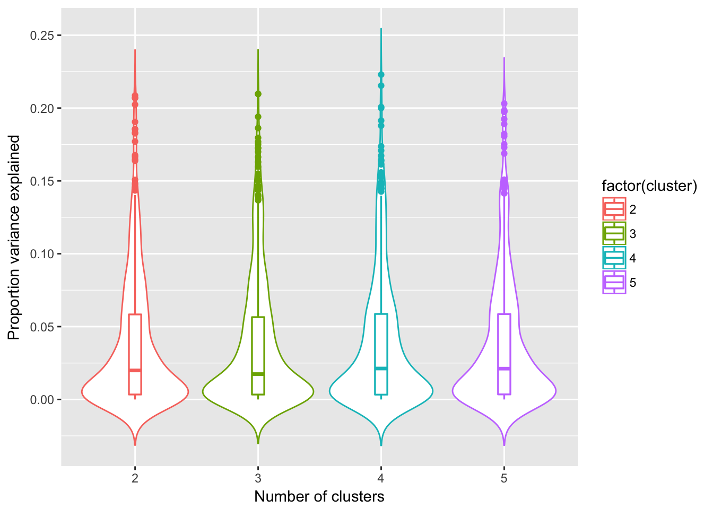
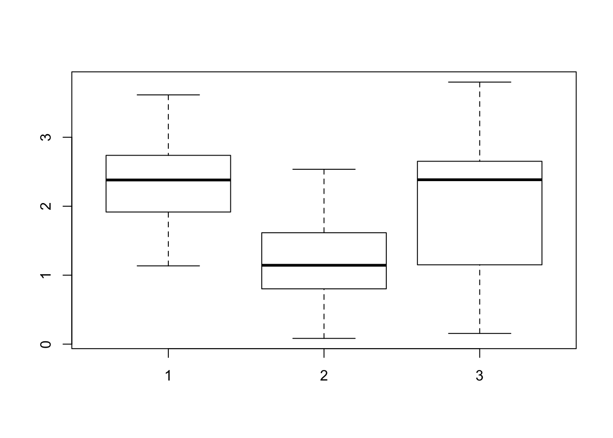
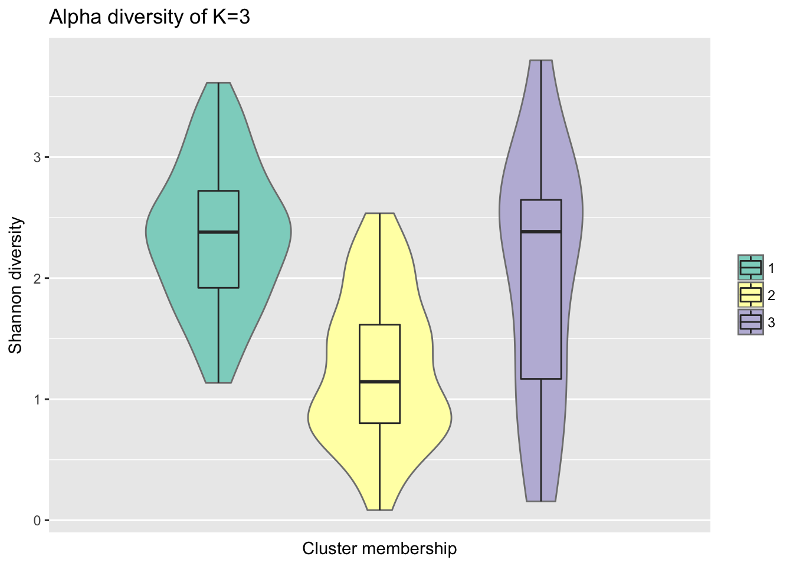
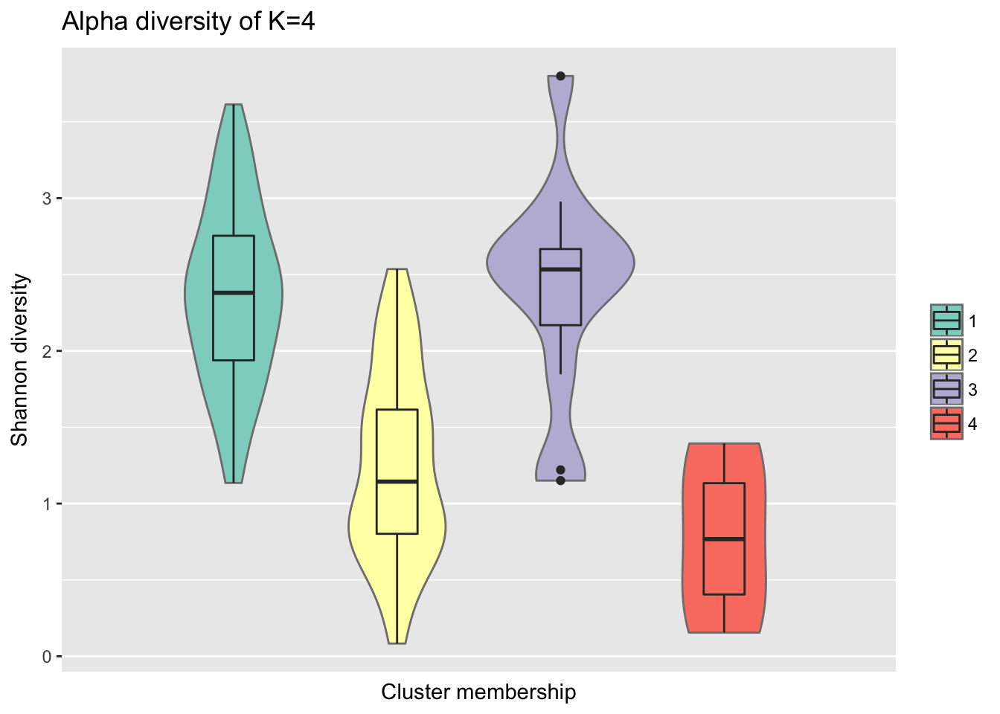
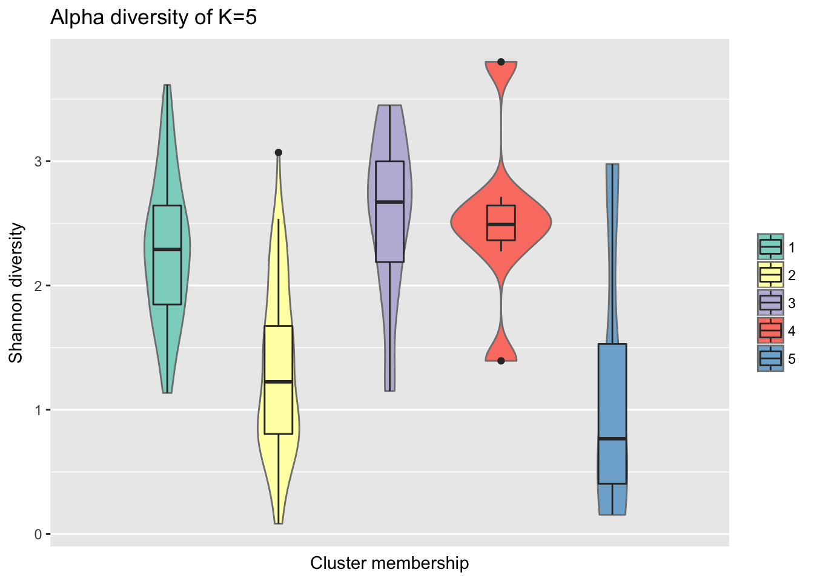
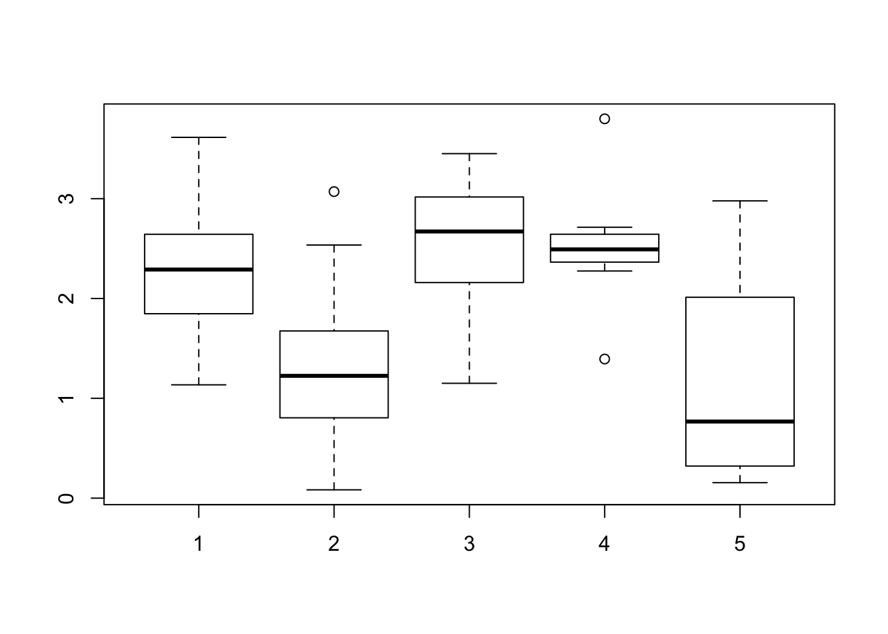

Warning in as.POSIXlt.POSIXct(Sys.time()): unknown timezone 'zone/tz/2018c.
1.0/zoneinfo/America/Chicago'Last updated: 2018-06-07
Code version: 47a3967
We compare fitting under differet k and computed for every feature, sample variance in abundance that is explained by sample cluster membership.
Results showed that k=2 gives the largest variance explained (median of sample variances is higher than the other k).
library(ggplot2)
library(metagenomeSeq)Load data
MRobj <- readRDS("../data/nasal_filtered_normed_batchcorrected.rds")
counts <- MRcounts(MRobj,norm=FALSE,log=FALSE)Load previously computed results.
clust_2 <- readRDS("../output/gom-k2-best-seed-67.rds")
clust_3 <- readRDS("../output/gom-k3-best-seed-67.rds")
clust_4 <- readRDS("../output/gom-k4-best-seed-59.rds")
clust_5 <- readRDS("../output/gom-k5-best-seed-307.rds")
fits <- c(clust_2, clust_3, clust_4, clust_5)
names(fits) <- c("clust_2", "clust_3", "clust_4", "clust_5")Extract sampel cluster membership.
membership <- lapply(fits, function(xx) {
apply(xx$omega, 1, which.max)
})
names(membership) <- c("clust_2", "clust_3", "clust_4", "clust_5")Compute variance explained.
varprop_species <- lapply(1:length(membership), function(index) {
which_sample <- which(colnames(counts) %in% names(membership[[index]]))
counts_which <- counts[, which_sample]
var <- sapply(1:nrow(counts_which), function(index2) {
res <- lm(log2(counts_which[index2,]+2) ~ membership[[index]])
sumOfsquares <- anova(res)[[2]]
sumOfsquares[1]/sum(sumOfsquares) })
return(var)
})
names(varprop_species) <- names(membership)
saveRDS(varprop_species, file = "../data/varprop.rds")Plot variance explained
varprop <- readRDS("../data/varprop.rds")
varprop_long <- data.frame(
prop = do.call(c, varprop),
cluster = factor(rep(2:5, each = nrow(varprop))) )
varprop_long$cluster <- as.numeric(as.character(varprop_long$cluster))K = 2 to 5
ggplot(varprop_long, aes(x = factor(cluster), y = prop,
col = factor(cluster)), size = .2) +
geom_violin(trim = FALSE, size=.5) +
geom_boxplot(width=0.1, size = .6) +
labs(x = "Number of clusters", y = "Proportion variance explained")
Sig difference between K=2 vs K=4,5, but no sig. difference between K=2 and K=3.
wilcox.test(varprop$clust_2, varprop$clust_3)
Wilcoxon rank sum test with continuity correction
data: varprop$clust_2 and varprop$clust_3
W = 185720, p-value = 6.513e-10
alternative hypothesis: true location shift is not equal to 0wilcox.test(varprop$clust_2, varprop$clust_4)
Wilcoxon rank sum test with continuity correction
data: varprop$clust_2 and varprop$clust_4
W = 183850, p-value = 5.653e-09
alternative hypothesis: true location shift is not equal to 0wilcox.test(varprop$clust_2, varprop$clust_5)
Wilcoxon rank sum test with continuity correction
data: varprop$clust_2 and varprop$clust_5
W = 166400, p-value = 0.01104
alternative hypothesis: true location shift is not equal to 0Consider within-sample diversity difference for when K=3.
library(data.table)
shannon_values <- fread("~/Dropbox/current-projects/nasalMicrobiomeManuscript/draft-results/shannon_values.tsv")
all.equal(shannon_values$V1, rownames(fits$clust_3$omega))[1] TRUEshannon_values$GOM <- sapply(1:nrow(fits$clust_3$omega), function(i) {
which.max(fits$clust_3$omega[i,]) })
boxplot(shannon_values$V2~ shannon_values$GOM)
levels(shannon_values$GOM) <- c("Group 1", "Group 2", "Group 3")
library(ggplot2)
ggplot(shannon_values, aes(x=GOM, y = V2, fill = factor(GOM))) +
geom_violin(col = "gray50") +
scale_fill_manual(values = c(brewer.pal(12,"Set3")[1],
brewer.pal(12,"Set3")[2],
brewer.pal(12,"Set3")[3])) +
geom_boxplot(width=.25) + ylab("Shannon diversity") +
scale_x_discrete(name = "Cluster membership",
labels = c("Group 1", "Group 2", "Group 3")) +
guides(fill=guide_legend(title="")) +
ggtitle("Alpha diversity of K=3")
Consider within-sample diversity difference for when K=4.
library(data.table)
shannon_values <- fread("~/Dropbox/current-projects/nasalMicrobiomeManuscript/draft-results/shannon_values.tsv")
all.equal(shannon_values$V1, rownames(fits$clust_4$omega))[1] TRUEshannon_values$GOM <- sapply(1:nrow(fits$clust_4$omega), function(i) {
which.max(fits$clust_4$omega[i,]) })
levels(shannon_values$GOM) <- c("Group 1", "Group 2", "Group 3", "Group 4")
library(ggplot2)
ggplot(shannon_values, aes(x=GOM, y = V2, fill = factor(GOM))) +
geom_violin(col = "gray50") +
scale_fill_manual(values = c(brewer.pal(12,"Set3")[1],
brewer.pal(12,"Set3")[2],
brewer.pal(12,"Set3")[3],
brewer.pal(12,"Set3")[4])) +
geom_boxplot(width=.25) + ylab("Shannon diversity") +
scale_x_discrete(name = "Cluster membership",
labels = c("Group 1", "Group 2", "Group 3", "Group 4")) +
guides(fill=guide_legend(title="")) +
ggtitle("Alpha diversity of K=4")
Consider within-sample diversity difference for when K=5.
library(data.table)
shannon_values <- fread("~/Dropbox/current-projects/nasalMicrobiomeManuscript/draft-results/shannon_values.tsv")
all.equal(shannon_values$V1, rownames(fits$clust_5$omega))[1] TRUEshannon_values$GOM <- sapply(1:nrow(fits$clust_5$omega), function(i) {
which.max(fits$clust_5$omega[i,]) })
boxplot(shannon_values$V2~ shannon_values$GOM)levels(shannon_values$GOM) <- c("Group 1", "Group 2", "Group 3", "Group 4", "Group 5")
library(ggplot2)
ggplot(shannon_values, aes(x=GOM, y = V2, fill = factor(GOM))) +
geom_violin(col = "gray50") +
scale_fill_manual(values = c(brewer.pal(12,"Set3")[1],
brewer.pal(12,"Set3")[2],
brewer.pal(12,"Set3")[3],
brewer.pal(12,"Set3")[4],
brewer.pal(12,"Set3")[5])) +
geom_boxplot(width=.25) + ylab("Shannon diversity") +
scale_x_discrete(name = "Cluster membership",
labels = c("Group 1", "Group 2", "Group 3", "Group 4", "Group 5")) +
guides(fill=guide_legend(title="")) +
ggtitle("Alpha diversity of K=5")
rownames(counts)[order(varprop$clust_2, decreasing = F)[1:10]] [1] "k__Bacteria;p__Proteobacteria;c__Betaproteobacteria;o__Hydrogenophilales;f__Hydrogenophilaceae;g__Thiobacillus;s__"
[2] "k__Bacteria;p__Firmicutes;c__Clostridia;o__Clostridiales;f__Veillonellaceae;g__Veillonella;s__"
[3] "k__Bacteria;p__Actinobacteria;c__Actinobacteria;o__Actinomycetales;f__Nocardioidaceae;g__Friedmanniella;s__"
[4] "k__Bacteria;p__Actinobacteria;c__Actinobacteria;o__Actinomycetales;f__Geodermatophilaceae;g__Modestobacter;s__"
[5] "k__Bacteria;p__Bacteroidetes;c__[Saprospirae];o__[Saprospirales];f__Chitinophagaceae;g__Sediminibacterium;s__"
[6] "k__Bacteria;p__Actinobacteria;c__Actinobacteria;o__Actinomycetales;f__Cellulomonadaceae;g__Cellulomonas;s__"
[7] "s__subflava"
[8] "k__Bacteria;p__Firmicutes;c__Bacilli;o__Bacillales;f__Bacillaceae;g__Geobacillus;s__"
[9] "k__Bacteria;p__Proteobacteria;c__Gammaproteobacteria;o__Enterobacteriales;f__Enterobacteriaceae;g__Klebsiella;s__"
[10] "k__Bacteria;p__Proteobacteria;c__Betaproteobacteria;o__Burkholderiales;f__Comamonadaceae;g__Comamonas;s__" library(data.table)
de_results <- fread("~/Dropbox/current-projects/nasalMicrobiomeManuscript/draft-results/tbl.tsv")
all.equal(de_results$V1[match(rownames(counts), de_results$V1)], rownames(counts))[1] TRUEde_results <- de_results[match(rownames(counts), de_results$V1),]
plot(varprop$clust_2,-log10(de_results$adjPvalue),
xlab = "Proportion of variance explained of K=2",
ylab="-log10(adjusted P-value)",
pch=16, cex=.7,
col=(de_results$adjPvalue<.01)+1)
abline(h=2,lty=2,col="black")
de_results$varprop_clust2 <- varprop$clust_2Append the variance proportion explained to the FDR results.
de_results <- de_results[order(de_results$adjPvalues),]
write.table(de_results,
"~/Dropbox/current-projects/nasalMicrobiomeManuscript/draft-results/tbl_updated.tsv",
quote=F, col.names = NA, sep="\t")
#tmp <- fread("~/Dropbox/current-projects/nasalMicrobiomeManuscript/draft-results/tbl_updated.tsv")R version 3.4.1 (2017-06-30)
Platform: x86_64-apple-darwin15.6.0 (64-bit)
Running under: macOS High Sierra 10.13
Matrix products: default
BLAS: /Library/Frameworks/R.framework/Versions/3.4/Resources/lib/libRblas.0.dylib
LAPACK: /Library/Frameworks/R.framework/Versions/3.4/Resources/lib/libRlapack.dylib
locale:
[1] en_US.UTF-8/en_US.UTF-8/en_US.UTF-8/C/en_US.UTF-8/en_US.UTF-8
attached base packages:
[1] parallel stats graphics grDevices utils datasets methods
[8] base
other attached packages:
[1] data.table_1.11.0 metagenomeSeq_1.21.1 RColorBrewer_1.1-2
[4] glmnet_2.0-16 foreach_1.4.4 Matrix_1.2-14
[7] limma_3.34.9 Biobase_2.38.0 BiocGenerics_0.24.0
[10] ggplot2_2.2.1
loaded via a namespace (and not attached):
[1] Rcpp_0.12.16 pillar_1.2.2 compiler_3.4.1
[4] git2r_0.21.0 plyr_1.8.4 bitops_1.0-6
[7] iterators_1.0.9 tools_3.4.1 digest_0.6.15
[10] evaluate_0.10.1 tibble_1.4.2 gtable_0.2.0
[13] lattice_0.20-35 rlang_0.2.0 yaml_2.1.19
[16] stringr_1.3.0 knitr_1.20 caTools_1.17.1
[19] gtools_3.5.0 rprojroot_1.3-2 grid_3.4.1
[22] rmarkdown_1.9 gdata_2.18.0 magrittr_1.5
[25] backports_1.1.2 scales_0.5.0 gplots_3.0.1
[28] codetools_0.2-15 htmltools_0.3.6 matrixStats_0.53.1
[31] colorspace_1.3-2 labeling_0.3 KernSmooth_2.23-15
[34] stringi_1.2.2 lazyeval_0.2.1 munsell_0.4.3 This R Markdown site was created with workflowr